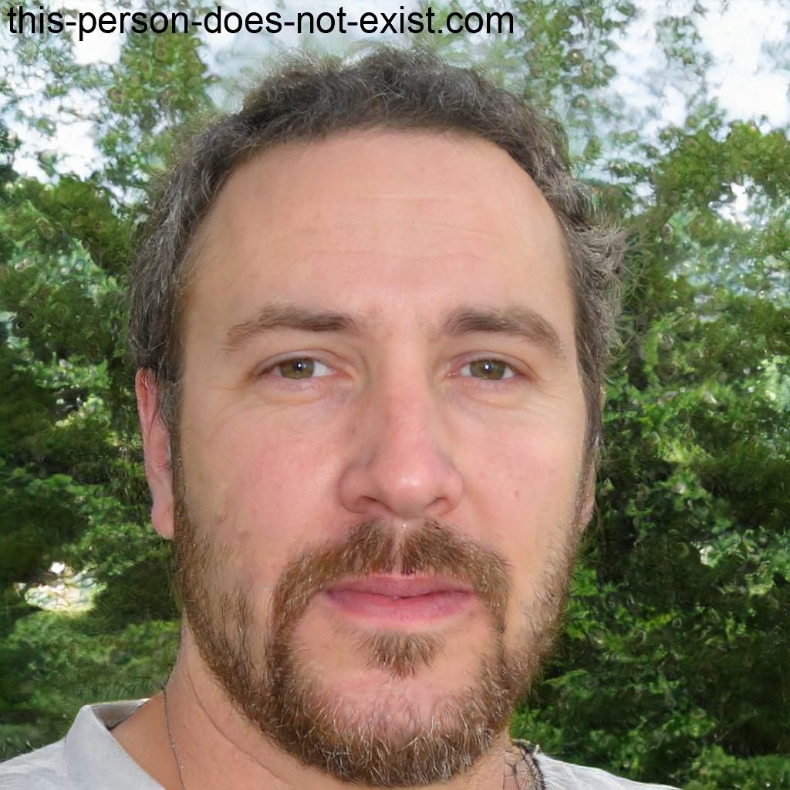
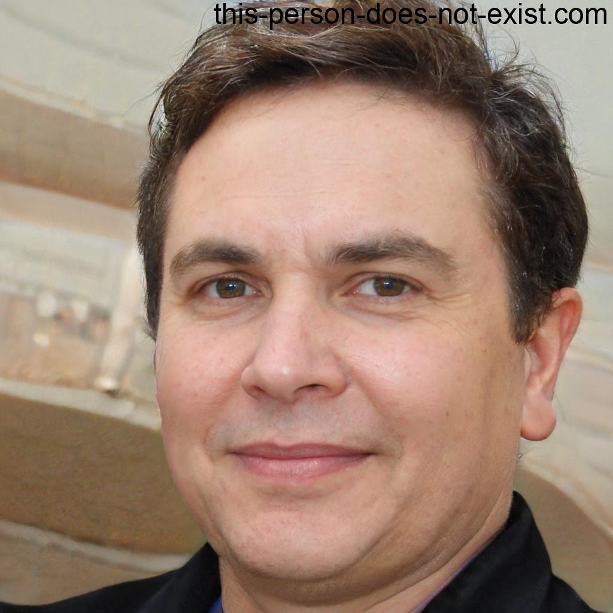
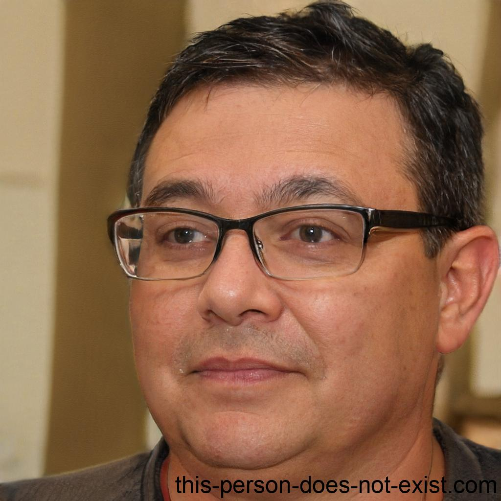

Nuestro Equipo: Pasión por el Campo, Compromiso con la Excelencia
Detrás de "La Correntada", hay tres hermanos: Christian, Gastón y Franco. Nacidos y criados en el corazón de la zona rural de Coronel Baigorria, llevan el campo en la sangre y comparten una profunda pasión por la agricultura y la ganadería.



Nuestro Compromiso:
Su compromiso con la excelencia se refleja en cada etapa de la producción, desde la siembra y la cría de ganado hasta la cosecha y la exportación. Su objetivo es ofrecer productos de la más alta calidad, que satisfagan las necesidades de sus clientes y contribuyan al bienestar de la sociedad.
¡Conoce a las personas que hacen posible "La Correntada"!
Raíces en el Campo, Visión de Futuro:
Conexión con la tierra:
Crecieron rodeados de campos de cultivo y ganado, aprendiendo desde temprana edad los secretos del trabajo agrícola y ganadero. Esta conexión con la tierra los impulsa a trabajar con respeto por el medio ambiente y a buscar prácticas sostenibles.Trabajo en equipo:
Trabajan a la par, combinando sus conocimientos y habilidades para llevar adelante la empresa con éxito. Cada uno aporta su experiencia en áreas específicas, complementándose para lograr los mejores resultados.Compromiso con la comunidad:
Como parte de la comunidad de Coronel Baigorria, se sienten comprometidos con el desarrollo local y buscan generar oportunidades de empleo y crecimiento. Se enorgullecen de sus raices, y de poder generar productos de alta calidad, desde su lugar de origen.Visión de futuro:
Inspirados por su herencia rural, pero con la mirada puesta en el futuro, buscan constantemente innovar y adoptar nuevas tecnologías para mejorar la eficiencia y la sostenibilidad de su producción. La meta es poder seguir produciendo alimentos de alta calidad, para el mundo, desde su hogar.